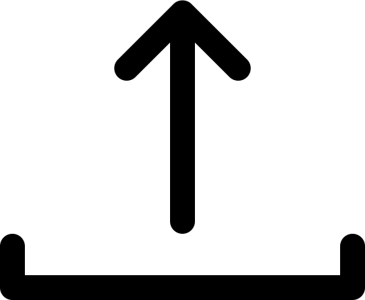

<link rel="import" href="../polymer/polymer.html"> 
<link rel="import" href="../paper-toolbar/paper-toolbar.html"> 
<link rel="import" href="../iron-flex-layout/classes/iron-flex-layout.html">
<link rel="import" href="lens-node.html"> 

<!--

A component used to create new lenses, by connecting components and passing data through them.

Example:

    <lens-composer></lens-composer>

@demo
-->

<dom-module id="lens-composer">
    <style>
      :host { 
        display: block;
        position: absolute;
        height: 100%;
        width: 100%;
      }

      /* GENERAL STYLES */ 
      .padded {
        padding: 10px;
        box-sizing: border-box;
      }

      .btn {
        border-radius: 200px;
        text-align: center;
        cursor: pointer;
        display: inline-block;
        margin: 0 auto;
        font-size: 0.8em;
        letter-spacing: 1px;
        text-transform: uppercase;
      }

      .btn-primary {
        background-color: #1CD4CA;
        color: white;
      }

      .btn-outline {
        border: 2px solid black;
      }

      /* NAV STYLES */ 
      #nav {
        width: 100%;
        height: 85px;
        box-sizing: border-box;
        border-bottom: 3px solid #eee;
      }

      #lens-info {
        display: inline-block;
        position: relative;
        float: left;
        padding-left: 20px;
        box-sizing: border-box;
      }

      .title {
        /* TODO: Style title text */
      }

      .author {
        /* TODO: Style author text */
      }

      #save {
        display: inline-block;
        float: right;
        height: 100%;
        width: 80px;
        border-left: 3px solid #eee;
        box-sizing: border-box;
      }
      
      .icon {
        display: block;
        margin: 0 auto;
        margin-top: 25px; /* TODO: make this more responsive -- table cell vertical align? */
      }

      /* CONTROL PANEL STYLES */ 
      #control-panel {
        width: 20%;
        min-width: 200px;
        height: 100%;
        left: 0;
        top: 0;
        overflow: hidden;
        border-right: 3px solid #eee;
      }

    </style>
    <template>
      <!-- HEADER -->
      <div id="nav">
        <div id="lens-info" class="center horizontal layout flex">
          <p class="title">Title</p>
          <p>Author</p>
        </div>
        <div id="save" class="center horizontal layout">
          
        </div>
      </div>


      <!-- TRACKS -->
      <div id="control-panel" class="padded">
        <div class="btn btn-outline padded">Add new track</div>
      </div>

      <!-- MAIN FRAME -->
      <template is="dom-repeat" items="{{nodes}}" as="node">

        <lens-node id="{{node.id}}" type="{{node.type}}"></lens-node>
      </template>
    </template>
  
  <script>
    Polymer({
      is: 'lens-composer',
      properties: {
        /**
         * prevState is an object containing data required to rebuild a lens.
         * Example:
         *   {
         *     nodes: [{ 'type': 'input', 'id':'lens-node-0',  'componentName': 'lens-viz-g-bar'}],
         *   }
         * @type {Object}
         */
        prevState: {
          type: Object,
          value: function(){ return {     nodes: [
              { 'type': 'input', 'id':'lens-node-0',  'componentName': 'lens-viz-g-bar'},
              { 'type': 'transform', 'id':'lens-node-1',  'componentName': 'lens-viz-g-bar'}
            ] }; }
        },
        nodes: {
          type: Array,
          value: function(){ return []; }
        },
        // INITIALIZE PRIVATE
        _uniqueCounter: {
          type: Number,
          value: 0
        }
        
      },
      listeners: {

      },
      attached: function(){
        if (this.prevState){
          this.loadLens(this.prevState);
        }

      },
      loadLens: function(lensData){
        var self = this;
        // this.nodes = lensData.nodes;
        lensData.nodes.forEach(function(node){
          // var newNode = self.createNode(node.type, node.id);
          
          // node.id = newNode.id;
          self.push('nodes', node);

        })

        console.log(this.nodes);


        // Recreate a lens given the data.
      },
      clearLens: function(){
        // Wipe the slate clean and start from scratch
      },
      addNewComponent: function(){
        // Adds a new external component to the list
      },
      createNode: function(type, id, track){
        // Creates a new lens-node
        var newNode = document.createElement('lens-node');

        newNode.id = id || this._generateUniqueId('lens-node');
        newNode.type = type;
        this.appendChild(newNode);
        
        return newNode;

      },
      addNode: function(){

      },
      deleteNode: function(){
        // Deletes a lens-node
      },
      connectNodes: function(){
        // Connects I/O of nodes 
      },
      _generateUniqueId: function(elName){
        // Generates a unique id for lens-node
        var uniqueId = elName + '-' + this._uniqueCounter;
        
        this._uniqueCounter+= 1;

        return uniqueId;
      }
     
    });
  </script>
</dom-module>